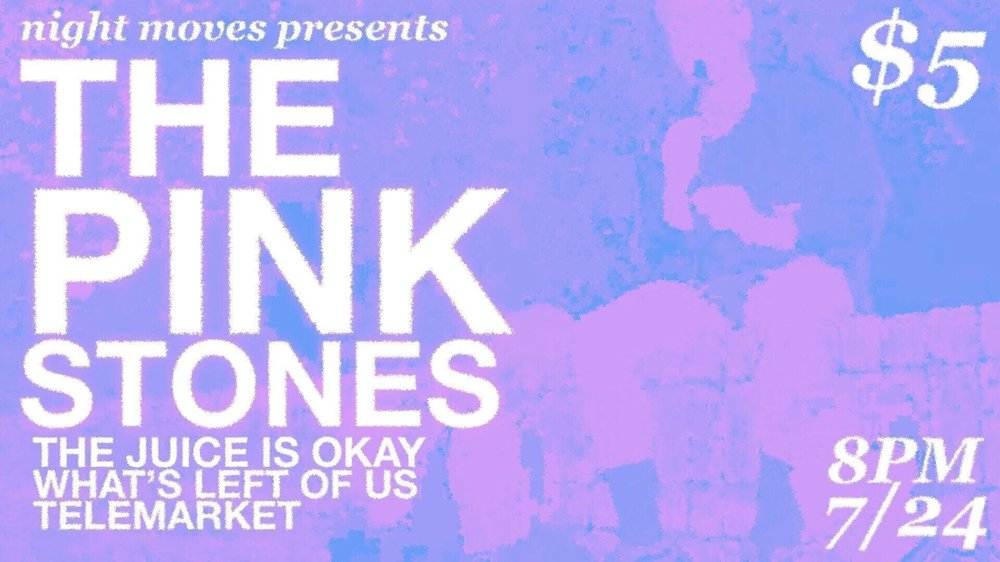

 WED JUL 24from the archive The Pink Stones, The Juice Is Okay, What's Left of Us, Telemarket the pink stonesthe juice is okaywhat's left of ustelemarket Night Moves open in mapsshare this flyerthe archive ↗